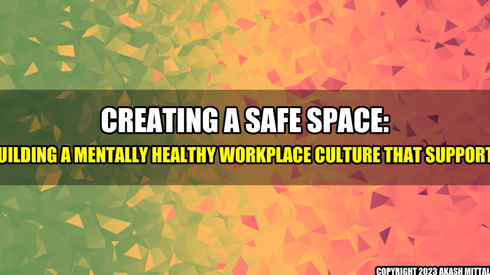

Creating a Safe Space: Building a Mentally Healthy Workplace Culture that Supports

It's Monday morning and you're sitting at your desk staring at a pile of paperwork. You're sleep-deprived and stressed out, and the thought of facing another day of work is enough to make you call in sick. Unfortunately, this is a reality for too many workers, and it's taking a toll on their mental health.
According to the World Health Organization, depression and anxiety cost the global economy $1 trillion a year. These conditions affect 1 in 4 people, making them the leading cause of disability worldwide. However, workplaces can play a major role in promoting mental health and preventing burnout. Here are some tips for creating a safe space that supports employees' mental health.
1. Foster a Positive Company Culture
Employees spend most of their waking hours at work, which means their work environment can have a big impact on their mental health. A negative work culture can lead to burnout, stress, and decreased productivity. On the other hand, a positive work culture can increase employee engagement, motivation, and job satisfaction.
You can create a positive work culture by:
- Promoting work-life balance: Encourage employees to take breaks, use their vacation time, and avoid working overtime regularly.
- Encouraging open communication: Create a safe space where employees can voice their concerns and ideas without fear of retribution.
- Recognizing accomplishments: Celebrate wins, big or small, to boost employee morale.
- Maintaining a healthy work environment: Promote wellness initiatives such as healthy snacks, standing desks, or meditation sessions.
2. Offer Support and Resources
It's important for employees to know they have support when they need it. By offering resources and support, employers can reduce the stigma around mental health and promote a positive work culture. Some examples of resources may include:
- EAP (Employee Assistance Programs): EAPs offer confidential counseling and referrals to employees experiencing personal or work-related problems.
- Mental health days: Offer employees paid time off to focus on their mental health and wellbeing when needed.
- Mental health training: Train managers and supervisors to recognize signs of mental health issues and offer support.
- Flexible work arrangements: Offer flexibility in work schedules, remote work, or job sharing to help employees manage their mental health.
3. Prioritize Mental Health
Finally, it's essential to prioritize mental health as a company. Creating a safe space requires ongoing commitment to mental health initiatives and fostering an environment of open communication. Companies can prioritize mental health by:
- Offering mental health benefits: Mental health treatment can be expensive, so offering benefits such as therapy or medication coverage can be a financial relief for employees.
- Providing peer support: Create support groups to connect employees experiencing similar issues as a way to promote camaraderie and mental health.
- Budget allocation: Dedicate resources and budget to supporting employee mental health and wellbeing initiatives.
Conclusion
In conclusion, promoting mental health and safety should be a top priority for companies. Creating safe spaces encourages employees to speak openly about mental health and leads to healthier employees, increased well-being, engagement and productivity. By fostering a positive culture, offering support and resources, and prioritizing mental health, companies can create an environment that promotes mental health and supports employee's wellbeing.
References:
- https://www.who.int/mental_health/policy/quality/ccm_exec_summary_english.pdf
- https://www.cdc.gov/workplacehealthpromotion/health-strategies/depression/index.html
- https://www.nytimes.com/2019/05/16/smarter-living/manage-emotional-workload.html
Hashtags:
- #mentalhealth #mentalwellness
- #healthyworkplace #safespace
- #positiveworkculture #workplacewellness
- #mentalsupport #mentalhealthawareness
SEO Keywords:
- Mental health workplace culture
- Mental wellness workplace practices
- Creating a safe space for mental health support
- Positive work culture impact on mental health
Article Category:
Workplace Wellness
Akash Mittal Tech Article
Share on Twitter Share on LinkedIn